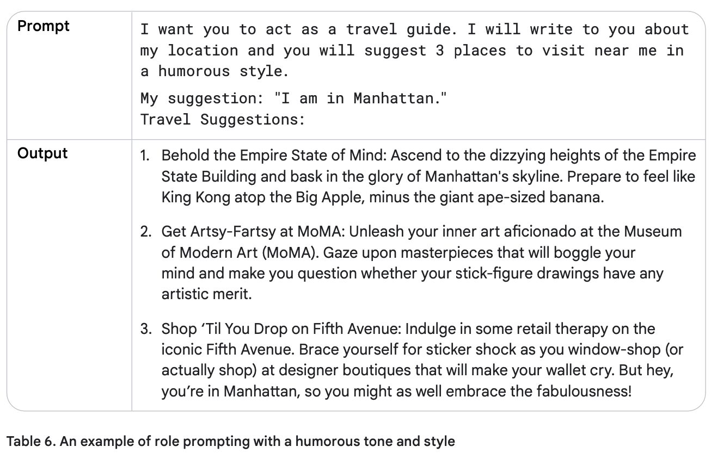
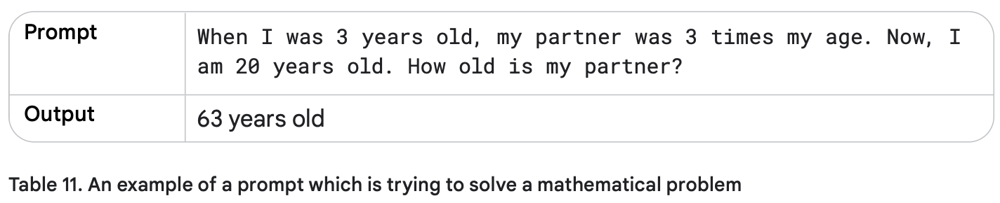
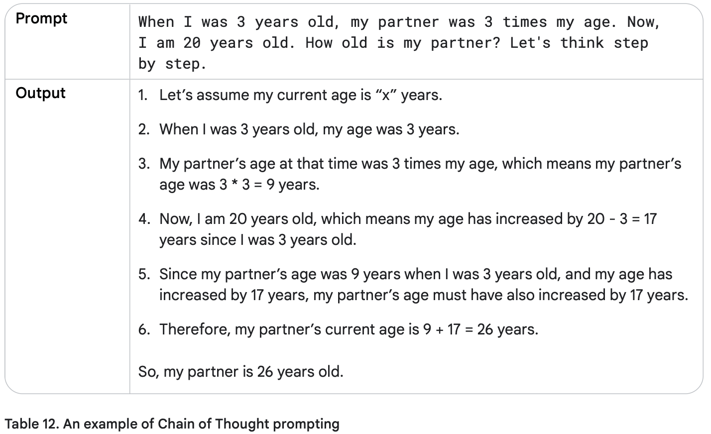
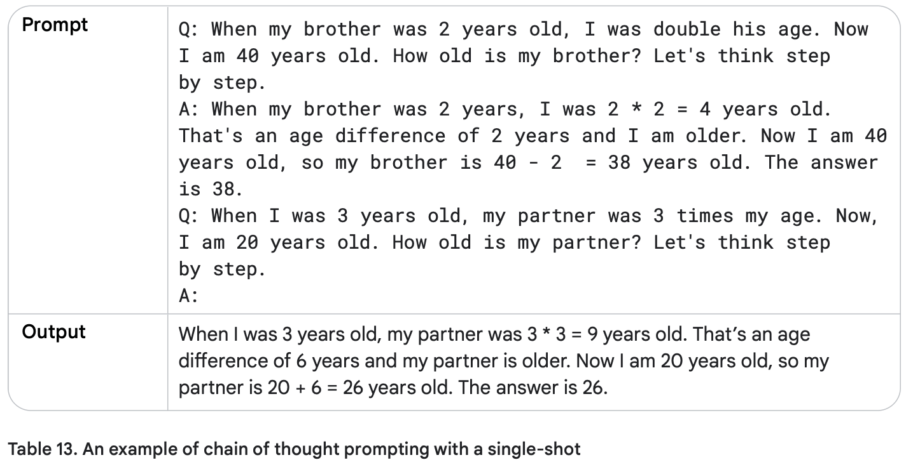
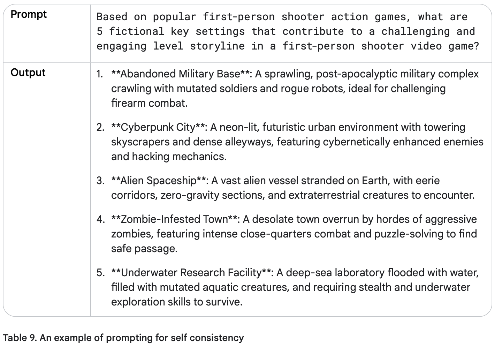

1. مقدمه
هنگام فکر کردن درباره ورودی و خروجی یک مدل زبانی بزرگ (LLM)، یک پرامپت متنی (که گاهی با سایر مدالیتهها مانند پرامپتهای تصویری همراه است) ورودیای است که مدل برای پیشبینی یک خروجی خاص استفاده میکند. شما نیازی نیست یک دانشمند داده یا مهندس یادگیری ماشین باشید - هر کسی میتواند یک پرامپت بنویسد. با این حال، ساخت موثرترین پرامپت میتواند پیچیده باشد. جنبههای مختلفی از پرامپت شما بر کارآمدی آن تأثیر میگذارد: مدلی که استفاده میکنید، دادههای آموزشی مدل، تنظیمات مدل، انتخاب کلمات شما، سبک و لحن، ساختار و زمینه همگی مهم هستند. بنابراین، مهندسی پرامپت یک فرآیند تکراری است. پرامپتهای نامناسب میتوانند منجر به پاسخهای مبهم و نادرست شوند و میتوانند توانایی مدل برای ارائه خروجی معنادار را مختل کنند.
وقتی با چتبات Gemini صحبت میکنید، اساساً پرامپتها را مینویسید، اما این مقاله بر نوشتن پرامپتها برای مدل Gemini در Vertex AI یا با استفاده از API تمرکز دارد، زیرا با پرامپت کردن مستقیم مدل، شما به تنظیمات مانند دما و غیره دسترسی خواهید داشت.
این مقاله به طور مفصل درباره مهندسی پرامپت بحث میکند. ما به تکنیکهای مختلف پرامپت نگاه خواهیم کرد تا به شما در شروع کار کمک کنیم و نکات و بهترین شیوهها را به اشتراک میگذاریم تا یک متخصص پرامپت شوید. همچنین برخی از چالشهایی که ممکن است هنگام ساخت پرامپتها با آنها مواجه شوید را بررسی خواهیم کرد.
2. مفهوم مهندسی پرامپت
به یاد داشته باشید که یک LLM چگونه کار میکند؛ این یک موتور پیشبینی است. مدل متن متوالی را به عنوان ورودی میگیرد و سپس پیشبینی میکند که توکن بعدی چه باید باشد، بر اساس دادههایی که با آنها آموزش دیده است. LLM برای انجام این کار بارها و بارها عملیاتی میشود، با افزودن توکن پیشبینی شده قبلی به انتهای متن متوالی برای پیشبینی توکن بعدی. پیشبینی توکن بعدی بر اساس رابطه بین آنچه در توکنهای قبلی است و آنچه LLM در طول آموزش خود دیده است، انجام میشود.
وقتی یک پرامپت مینویسید، در تلاش هستید تا LLM را برای پیشبینی توالی درست توکنها تنظیم کنید. مهندسی پرامپت فرآیند طراحی پرامپتهای با کیفیت بالا است که LLMها را برای تولید خروجیهای دقیق هدایت میکند. این فرآیند شامل آزمایش برای یافتن بهترین پرامپت، بهینهسازی طول پرامپت و ارزیابی سبک نوشتاری و ساختار یک پرامپت در رابطه با وظیفه است. در زمینه پردازش زبان طبیعی و LLMها، یک پرامپت ورودیای است که به مدل ارائه میشود تا پاسخ یا پیشبینی را تولید کند.
این پرامپتها میتوانند برای دستیابی به انواع مختلفی از وظایف درک و تولید مانند خلاصهسازی متن، استخراج اطلاعات، پرسش و پاسخ، طبقهبندی متن، ترجمه زبان یا کد، تولید کد و مستندسازی کد یا استدلال استفاده شوند.
لطفاً به راهنماهای پرامپت Google با مثالهای ساده و موثر پرامپت مراجعه کنید.
هنگام مهندسی پرامپت، با انتخاب یک مدل شروع خواهید کرد. ممکن است نیاز باشد پرامپتها برای مدل خاص شما بهینه شوند، صرف نظر از اینکه از مدلهای زبانی Gemini در Vertex AI، GPT، Claude یا یک مدل منبع باز مانند Gemma یا LLaMA استفاده میکنید.
علاوه بر پرامپت، شما همچنین نیاز به آزمایش با تنظیمات مختلف یک LLM خواهید داشت.
3. تنظیمات خروجی مدلهای زبانی بزرگ
پس از انتخاب مدل، باید تنظیمات مدل را مشخص کنید. اکثر LLMها با گزینههای تنظیم مختلفی ارائه میشوند که خروجی LLM را کنترل میکنند. مهندسی پرامپت موثر نیازمند تنظیم بهینه این پیکربندیها برای وظیفه شما است.
طول خروجی
یک تنظیم مهم، تعداد توکنهایی است که در یک پاسخ تولید میشوند. تولید توکنهای بیشتر نیازمند محاسبات بیشتری از LLM است، که منجر به مصرف انرژی بالاتر، زمانهای پاسخ احتمالاً کندتر و هزینههای بالاتر میشود.
کاهش طول خروجی LLM باعث نمیشود که LLM از نظر سبک یا متنی در خروجی که ایجاد میکند مختصرتر شود، فقط باعث میشود که LLM پس از رسیدن به محدودیت، پیشبینی توکنهای بیشتر را متوقف کند. اگر نیازهای شما به طول خروجی کوتاه نیاز دارد، احتمالاً باید پرامپت خود را نیز برای تطبیق با آن مهندسی کنید.
محدودیت طول خروجی به ویژه برای برخی از تکنیکهای پرامپت LLM، مانند ReAct، مهم است، جایی که LLM پس از پاسخی که میخواهید، به انتشار توکنهای بیفایده ادامه خواهد داد.
توجه داشته باشید، تولید توکنهای بیشتر نیازمند محاسبات بیشتری از LLM است، که منجر به مصرف انرژی بالاتر و زمانهای پاسخ احتمالاً کندتر میشود، که منجر به هزینههای بالاتر میشود.
کنترلهای نمونهبرداری
LLMها رسماً یک توکن واحد را پیشبینی نمیکنند. در عوض، LLMها احتمالات را برای اینکه توکن بعدی چه میتواند باشد پیشبینی میکنند، با هر توکن در واژگان LLM که یک احتمال دریافت میکند. سپس از آن احتمالات توکن نمونهبرداری میشود تا مشخص شود توکن بعدی تولید شده چه خواهد بود.
دما (Temperature)، Top-K و Top-P رایجترین تنظیمات پیکربندی هستند که تعیین میکنند چگونه احتمالات توکن پیشبینی شده برای انتخاب یک توکن خروجی واحد پردازش میشوند.
دما (Temperature)
دما درجه تصادفی بودن در انتخاب توکن را کنترل میکند. دماهای پایینتر برای پرامپتهایی که انتظار پاسخ قطعیتری دارند مناسب هستند، در حالی که دماهای بالاتر میتوانند منجر به نتایج متنوعتر یا غیرمنتظره شوند. دمای 0 (رمزگشایی حریصانه) قطعی است: توکن با بالاترین احتمال همیشه انتخاب میشود (اگرچه توجه داشته باشید که اگر دو توکن دارای همان بالاترین احتمال پیشبینی شده باشند، بسته به نحوه پیادهسازی شکستن تساوی، ممکن است همیشه با دمای 0 خروجی یکسانی دریافت نکنید).
دماهای نزدیک به حداکثر تمایل به ایجاد خروجی تصادفیتر دارند. و همانطور که دما بالاتر و بالاتر میرود، همه توکنها به طور یکسان احتمال دارند که توکن پیشبینی شده بعدی باشند.
کنترل دمای Gemini را میتوان به روشی مشابه با تابع softmax که در یادگیری ماشین استفاده میشود درک کرد. تنظیم دمای پایین، دمای پایین softmax (T) را منعکس میکند، که بر یک دمای ترجیحی واحد با قطعیت بالا تأکید میکند. تنظیم دمای بالاتر Gemini مانند دمای بالای softmax است، که طیف وسیعتری از دماها در اطراف تنظیم انتخاب شده را قابل قبولتر میکند. این عدم قطعیت افزایش یافته، سناریوهایی را در نظر میگیرد که در آن یک دمای دقیق و سختگیرانه ممکن است ضروری نباشد، مانند زمانی که با خروجیهای خلاقانه آزمایش میکنید.
Top-K و Top-P
Top-K و Top-P (همچنین به عنوان نمونهبرداری هسته شناخته میشود) دو تنظیم نمونهبرداری هستند که در LLMها استفاده میشوند تا توکن بعدی پیشبینی شده را از توکنهایی با بالاترین احتمالات پیشبینی شده محدود کنند. مانند دما، این تنظیمات نمونهبرداری، تصادفی بودن و تنوع متن تولید شده را کنترل میکنند.
• نمونهبرداری Top-K، K توکن با بیشترین احتمال را از توزیع پیشبینی شده مدل انتخاب میکند. هرچه Top-K بالاتر باشد، خروجی مدل خلاقانهتر و متنوعتر است؛ هرچه Top-K پایینتر باشد، خروجی مدل محدودتر و واقعیتر است. Top-K برابر با 1 معادل رمزگشایی حریصانه است.
• نمونهبرداری Top-P، توکنهای برتری را انتخاب میکند که احتمال تجمعی آنها از یک مقدار خاص (P) تجاوز نکند. مقادیر برای P از 0 (رمزگشایی حریصانه) تا 1 (تمام توکنها در واژگان LLM) متغیر است.
بهترین راه برای انتخاب بین Top-K و Top-P، آزمایش با هر دو روش (یا هر دو با هم) و دیدن اینکه کدام یک نتایجی را که به دنبال آن هستید تولید میکند.
ترکیب تنظیمات
انتخاب بین Top-K، Top-P، دما و تعداد توکنهایی که باید تولید شوند، به کاربرد خاص و نتیجه مورد نظر بستگی دارد، و تنظیمات همگی بر یکدیگر تأثیر میگذارند. همچنین مهم است که مطمئن شوید درک میکنید که مدل انتخابی شما چگونه تنظیمات نمونهبرداری مختلف را با هم ترکیب میکند.
اگر دما، Top-K و Top-P همگی در دسترس باشند (مانند Vertex Studio)، توکنهایی که هم معیارهای Top-K و هم Top-P را برآورده میکنند، نامزدهایی برای توکن پیشبینی شده بعدی هستند، و سپس دما برای نمونهبرداری از توکنهایی که از معیارهای Top-K و Top-P عبور کردهاند اعمال میشود. اگر فقط Top-K یا Top-P در دسترس باشد، رفتار یکسان است اما فقط از یک تنظیم Top-K یا P استفاده میشود.
اگر دما در دسترس نباشد، از هر توکنی که معیارهای Top-K و/یا Top-P را برآورده میکند، به صورت تصادفی انتخاب میشود تا یک توکن پیشبینی شده بعدی واحد تولید شود.
در تنظیمات افراطی یک مقدار پیکربندی نمونهبرداری، آن تنظیم نمونهبرداری یا تنظیمات پیکربندی دیگر را لغو میکند یا بیاهمیت میشود.
• اگر دما را روی 0 تنظیم کنید، Top-K و Top-P بیاهمیت میشوند - توکن با بیشترین احتمال، توکن پیشبینی شده بعدی میشود. اگر دما را به شدت بالا تنظیم کنید (بالای 1 - عموماً به 10ها)، دما بیاهمیت میشود و از هر توکنی که از معیارهای Top-K و/یا Top-P عبور میکند، به صورت تصادفی نمونهبرداری میشود تا یک توکن پیشبینی شده بعدی انتخاب شود.
• اگر Top-K را روی 1 تنظیم کنید، دما و Top-P بیاهمیت میشوند. فقط یک توکن از معیارهای Top-K عبور میکند، و آن توکن، توکن پیشبینی شده بعدی است. اگر Top-K را به شدت بالا تنظیم کنید، مانند اندازه واژگان LLM، هر توکن با احتمال غیر صفر برای اینکه توکن بعدی باشد، معیارهای Top-K را برآورده میکند و هیچ کدام انتخاب نمیشوند.
• اگر Top-P را روی 0 (یا یک مقدار بسیار کوچک) تنظیم کنید، اکثر پیادهسازیهای نمونهبرداری LLM فقط توکن با بیشترین احتمال را در نظر میگیرند تا معیارهای Top-P را برآورده کند، که دما و Top-K را بیاهمیت میکند. اگر Top-P را روی 1 تنظیم کنید، هر توکن با احتمال غیر صفر برای اینکه توکن بعدی باشد، معیارهای Top-P را برآورده میکند، و هیچ کدام انتخاب نمیشوند.
به عنوان یک نقطه شروع کلی، دمای 0.2، Top-P برابر با 0.95 و Top-K برابر با 30 به شما نتایج نسبتاً منسجمی میدهد که میتواند خلاقانه باشد اما نه به طور افراطی. اگر میخواهید نتایج به ویژه خلاقانهای داشته باشید، سعی کنید با دمای 0.9، Top-P برابر با 0.99 و Top-K برابر با 40 شروع کنید. و اگر میخواهید نتایج کمتر خلاقانهای داشته باشید، سعی کنید با دمای 0.1، Top-P برابر با 0.9 و Top-K برابر با 20 شروع کنید. در نهایت، اگر وظیفه شما همیشه یک پاسخ صحیح واحد دارد (مثلاً، پاسخ به یک مسئله ریاضی)، با دمای 0 شروع کنید.
توجه: با آزادی بیشتر (دما، Top-K، Top-P و توکنهای خروجی بالاتر)، LLM ممکن است متنی تولید کند که کمتر مرتبط است.
هشدار: آیا تا به حال پاسخی را دیدهاید که با مقدار زیادی کلمات پرکننده به پایان برسد؟ این همچنین به عنوان "باگ حلقه تکرار" شناخته میشود، که یک مشکل رایج در مدلهای زبانی بزرگ است که در آن مدل در یک چرخه گیر میکند، به طور مکرر همان کلمه (پرکننده)، عبارت یا ساختار جمله را تولید میکند، که اغلب با تنظیمات نامناسب دما و top-k/top-p تشدید میشود. این میتواند هم در تنظیمات دمای پایین و هم بالا رخ دهد، اگرچه به دلایل مختلف. در دماهای پایین، مدل بیش از حد قطعی میشود، به شدت به مسیر با بالاترین احتمال میچسبد، که میتواند منجر به یک حلقه شود اگر آن مسیر به متن تولید شده قبلی بازگردد. برعکس، در دماهای بالا، خروجی مدل بیش از حد تصادفی میشود، احتمال اینکه یک کلمه یا عبارت انتخاب شده به طور تصادفی، به شانس، به یک حالت قبلی بازگردد را افزایش میدهد، که به دلیل تعداد زیاد گزینههای موجود، یک حلقه ایجاد میکند. در هر دو مورد، فرآیند نمونهبرداری مدل "گیر میکند"، که منجر به خروجی یکنواخت و بیفایده میشود تا زمانی که پنجره خروجی پر شود. حل این مشکل اغلب نیازمند تنظیم دقیق مقادیر دما و top-k/top-p برای یافتن تعادل بهینه بین قطعیت و تصادفی بودن است.
4. تکنیکهای مهندسی پرامپت
مدلهای زبانی بزرگ (LLM) برای پیروی از دستورالعملها تنظیم شدهاند و روی مقادیر زیادی از دادهها آموزش دیدهاند تا بتوانند یک پرامپت را درک کنند و پاسخی تولید کنند. اما LLMها کامل نیستند؛ هرچه متن پرامپت شما واضحتر باشد، برای LLM بهتر است تا متن بعدی محتمل را پیشبینی کند. علاوه بر این، تکنیکهای خاصی که از نحوه آموزش LLMها و نحوه کار آنها استفاده میکنند، به شما کمک میکنند تا نتایج مرتبط را از LLMها دریافت کنید.
حال که درک میکنیم مهندسی پرامپت چیست و چه چیزی نیاز دارد، بیایید به برخی از مثالهای مهمترین تکنیکهای پرامپت بپردازیم.
پرامپت زیرو-شات (Zero-shot)
یک پرامپت زیرو-شات سادهترین نوع پرامپت است. این فقط توصیفی از یک وظیفه و برخی متنها را برای شروع کار LLM ارائه میدهد. این ورودی میتواند هر چیزی باشد: یک سؤال، شروع یک داستان، یا دستورالعملها. نام زیرو-شات به معنای 'بدون مثال' است.
بیایید از Vertex AI Studio (برای زبان) در Vertex AI استفاده کنیم، که یک محیط آزمایشی برای تست پرامپتها ارائه میدهد. در جدول 1، یک مثال پرامپت زیرو-شات برای طبقهبندی نقدهای فیلم خواهید دید.
فرمت جدول که در زیر استفاده شده است، روش عالی برای مستندسازی پرامپتها است. پرامپتهای شما احتمالاً قبل از اینکه در یک کد قرار بگیرند، از چندین تکرار عبور خواهند کرد، بنابراین مهم است که کار مهندسی پرامپت خود را به روشی منظم و ساختاریافته پیگیری کنید. اطلاعات بیشتر در مورد این فرمت جدول، اهمیت پیگیری کار مهندسی پرامپت و فرآیند توسعه پرامپت در بخش بهترین شیوهها در ادامه این فصل ("مستندسازی تلاشهای مختلف پرامپت") آمده است.
دمای مدل باید روی عدد پایینی تنظیم شود، زیرا نیازی به خلاقیت نیست، و ما از مقادیر پیشفرض Top-K و Top-P مدل gemini-pro استفاده میکنیم، که به طور مؤثر هر دو تنظیم را غیرفعال میکند (به 'تنظیمات خروجی LLM' در بالا مراجعه کنید). به خروجی تولید شده توجه کنید. کلمات "disturbing" و "masterpiece" باید پیشبینی را کمی پیچیدهتر کنند، زیرا هر دو کلمه در یک جمله استفاده شدهاند.
مثال پرامپت زیرو-شات:
وقتی زیرو-شات کار نمیکند، میتوانید نمونهها یا مثالهایی را در پرامپت ارائه دهید، که منجر به پرامپت "تک-شات" و "چند-شات" میشود.
پرامپت تک-شات و چند-شات (One-shot & Few-shot)
هنگام ایجاد پرامپتها برای مدلهای هوش مصنوعی، ارائه مثالها مفید است. این مثالها میتوانند به مدل کمک کنند تا آنچه را که از آن میخواهید درک کند. مثالها به ویژه زمانی مفید هستند که میخواهید مدل را به سمت یک ساختار یا الگوی خروجی خاص هدایت کنید.
یک پرامپت تک-شات، یک مثال واحد ارائه میدهد، از این رو نام تک-شات. ایده این است که مدل مثالی دارد که میتواند از آن تقلید کند تا بهترین عملکرد را در انجام وظیفه داشته باشد.
یک پرامپت چند-شات چندین مثال ارائه میدهد. این به مدل کمک میکند تا الگوها را بهتر درک کند و پاسخهای دقیقتری تولید کند.
مثال پرامپت چند-شات:

System، Context و Role Prompting همگی تکنیکهایی هستند که برای هدایت نحوه تولید متن توسط مدلهای زبانی بزرگ (LLMs) استفاده میشوند، اما هر کدام روی جنبههای متفاوتی تمرکز دارند:
- System Prompting: این تکنیک، کانتکس کلی و هدف اصلی را برای مدل زبانی مشخص میکند. به زبان ساده، مثل این است که به مدل بگوییم «قراره چی کار کنی». مثلاً بهش میگیم که باید یک متن رو ترجمه کنه، یا یک نظر رو دستهبندی کنه. این یه تصویر بزرگ از وظیفه مدل بهش میده.
- Contextual Prompting: این تکنیک، جزئیات خاص یا اطلاعات پسزمینهای رو که به موضوع یا وظیفه فعلی مربوط میشه، به مدل میده. مثلاً اگه ازش سوالی پرسیده بشه، این اطلاعات به مدل کمک میکنه بفهمه دقیقاً چی خواسته شده و جوابش رو بر اساس اون تنظیم کنه.
- Role Prompting: اینجا به مدل یک شخصیت یا هویت خاص میدیم که طبق اون رفتار کنه. مثلاً میگیم «تو یه معلم هستی» یا «مثل یه دوست حرف بزن». این کار باعث میشه جوابهایی که مدل میده، با اون نقش و دانش و رفتاری که براش تعریف کردیم، همخونی داشته باشه.
شباهتها و تفاوتها بین System، Contextual و Role Prompting ممکنه همپوشانی زیادی وجود داشته باشه. مثلاً یه دستوری که به مدل یه نقش میده (مثل «تو یه مترجم باش»)، میتونه همزمان زمینهای هم داشته باشه (مثل «این متن رو از فارسی به انگلیسی ترجمه کن»). ولی هر کدوم یه هدف اصلی متفاوت دارن:
پرامپت سیستمی (System Prompting)
پرامپت سیستمی یک روش برای تنظیم رفتار کلی مدل است. این به شما اجازه میدهد تا به مدل بگویید چه نوع دستیاری باشد، چگونه پاسخ دهد، و چه محدودیتهایی داشته باشد.
مثال پرامپت سیستمی:

پرامپت نقش (Role Prompting)
در پرامپت نقش، از مدل میخواهید نقش خاصی را بپذیرد. این میتواند به تولید پاسخهای تخصصیتر و متمرکزتر کمک کند.
مثال پرامپت نقش:
پرامپت کانتکسچوال (Contextual Prompting)
پرامپت کانتکسچوال شامل ارائه اطلاعات زمینهای اضافی به مدل است تا به آن کمک کند پاسخهای دقیقتر و مرتبطتری تولید کند.
مثال پرامپت Contextual:

پرامپت قدم به عقب (Step-back Prompting)
پرامپت قدم به عقب یک تکنیک است که در آن از مدل خواسته میشود قبل از پرداختن به مسئله اصلی، یک قدم به عقب بردارد و مسئله را در یک سطح انتزاعیتر بررسی کند.
مثال پرامپت قدم به عقب:

زنجیره تفکر (Chain of Thought)
زنجیره تفکر (CoT) یک تکنیک است که در آن از مدل خواسته میشود استدلال خود را قدم به قدم نشان دهد. این به ویژه برای مسائل پیچیده مفید است.
مثال زنجیره تفکر:
  خودسازگاری (Self-consistency)
خودسازگاری یک تکنیک است که در آن از مدل خواسته میشود چندین مسیر استدلال را برای یک مسئله در نظر بگیرد و سپس پاسخی را انتخاب کند که بیشترین سازگاری را دارد.
مثال خودسازگاری:
درخت تفکرات (Tree of Thoughts)
درخت تفکرات (ToT) یک گسترش از زنجیره تفکر است که به مدل اجازه میدهد چندین مسیر استدلال را کاوش کند و مسیرهای غیرامیدوارکننده را هرس کند.
مثال درخت تفکرات:

Solve this puzzle by exploring multiple possible solutions:
You have 8 balls that all look identical. One of them is slightly heavier than the others. Using a balance scale, how can you identify the heavier ball with just 2 weighings?
Let's explore different approaches:
Approach 1:
Approach 2:
Approach 3:
Now, let's evaluate each approach and determine which one is correct.واکنش (ReAct)
واکنش (ReAct) ترکیبی از استدلال و عمل است. مدل بین استدلال درباره یک مسئله و انجام اقدامات برای جمعآوری اطلاعات بیشتر تناوب دارد.
مثال واکنش:


5. پرامپت برای کدنویسی
مدلهای زبانی بزرگ (LLM) میتوانند در نوشتن، توضیح، ترجمه و اشکالزدایی کد کمک کنند. در این بخش، تکنیکهای پرامپت مختلف برای کار با کد را بررسی میکنیم.
نوشتن کد
هنگام درخواست از LLM برای نوشتن کد، ارائه دستورالعملهای واضح و مشخص کردن زبان برنامهنویسی مورد نظر مهم است.
مثال پرامپت برای نوشتن کد:

برای وظایف پیچیدهتر، میتوانید جزئیات بیشتری ارائه دهید:
Create a Python class for a Bank Account with the following features:
1. Initialize with account holder name and starting balance
2. Methods for deposit and withdrawal
3. A method to calculate interest (assume 2% annual interest)
4. Error handling for insufficient funds
5. A method to display the current balance and account details
Use proper documentation and follow PEP 8 style guidelines.توضیح کد
LLMها میتوانند در توضیح کد موجود کمک کنند، که برای یادگیری یا مستندسازی مفید است.
مثال پرامپت برای توضیح کد:

ترجمه کد
LLMها میتوانند کد را از یک زبان برنامهنویسی به زبان دیگر ترجمه کنند.
مثال پرامپت برای ترجمه کد:
اشکالزدایی و بررسی کد
LLMها میتوانند در شناسایی و رفع اشکالات در کد کمک کنند.
مثال پرامپت برای اشکالزدایی کد:


6. بهترین شیوههای مهندسی پرامپت Best Practices
در این بخش، بهترین شیوهها و نکات کاربردی برای مهندسی پرامپت موثر را بررسی میکنیم.
ارائه مثالها
مهمترین روش ارايه مثال هست (تک-شات و چند-شات) با پرامپت هست
ارائه مثالهای واضح میتواند به مدل کمک کند تا الگوها را بهتر درک کند و پاسخهای دقیقتری تولید کند. مثال بسیار بهیته هست چون شبیه یک ابزار آموزشی برای مدل عمل میکند.
نکته: برای وظایف پیچیده، از پرامپت چند-شات با مثالهای متنوع استفاده کنید.
Translate the following English phrases to French:
English: Hello, how are you?
French: Bonjour, comment allez-vous?
English: I would like to order a coffee, please.
French: Je voudrais commander un café, s'il vous plaît.
English: Where is the nearest train station?
French:طراحی با سادگی
پرامپتهای ساده و مستقیم اغلب بهترین نتایج را تولید میکنند. از زبان پیچیده یا دستورالعملهای مبهم خودداری کنید.
اگر پرامپت برای خود شما هم گنگ هست، مطمعن باشید برای مدل هم نامفهوم است.

در نوشتن پرامپ از افعال شبیه زیر میتوانید استفاده کنید:
Act, Analyze, Categorize, Classify, Contrast, Compare, Create, Describe, Define, Evaluate, Extract, Find, Generate, Identify, List, Measure, Organize, Parse, Pick, Predict, Provide, Rank, Recommend, Return, Retrieve, Rewrite, Select, Show, Sort, Summarize, Translate, Write.
مشخص کردن خروجی
خروجی مورد نظرتان را به وضوح مشخص کنید. یک دستور مختصر ممکن است نتواند LLM را به اندازه کافی راهنمایی کند و ممکن است خیلی کلی باشد.
استفاده از دستورالعملها به جای محدودیتها
به جای گفتن اینکه مدل چه کاری نکند، به آن بگویید چه کاری انجام دهد.
در درخواستنویسی (Prompting) برای هدایت خروجی یک مدل زبانی بزرگ (LLM)، از دستورات و محدودیتها استفاده میکنیم. این دو ابزار به ما کمک میکنند تا پاسخ مدل را به شکلی که میخواهیم شکل دهیم. در ادامه، این مفاهیم را به زبان ساده و قابل فهم توضیح میدهم:
دستورات (Instruction) چیست؟
دستورات، راهنماییهای مشخص و واضحی هستند که به مدل میگویند پاسخش چه شکل، سبک یا محتوایی باید داشته باشد. به عبارت دیگر، دستورات به مدل میگویند که چه کاری انجام دهد یا چه چیزی تولید کند.
مثال: «پاسخ را به صورت یک پاراگراف کوتاه بنویس.»
این نوع راهنمایی به مدل کمک میکند تا دقیقاً بفهمد چه انتظاری از آن داریم و کارش را در مسیر درست پیش ببرد.
محدودیتها (Constraint) چیست؟
محدودیتها، قوانینی هستند که مشخص میکنند مدل چه کاری نباید انجام دهد یا از چه چیزی باید دوری کند. اینها مثل خطوط قرمزی هستند که پاسخ مدل باید درون آنها بماند.
مثال: «از کلمات پیچیده و فنی استفاده نکن.»
محدودیتها کمک میکنند تا خروجی مدل در چارچوب مشخص و قابل قبولی بماند.
چرا دستورات بهتر از محدودیتها هستند؟
تحقیقات جدید نشان میدهد که استفاده از دستورات مثبت معمولاً بهتر از تکیه زیاد بر محدودیتها جواب میدهد. این موضوع شبیه به رفتار خود ما آدمهاست؛ ما هم راهنماییهای مثبت را بیشتر از لیست بلندبالای «این کار را نکن» دوست داریم.
دلیل بهتر بودن دستورات:
- دستورات بهطور مستقیم به مدل میگویند که چه نتیجهای میخواهیم
- امکان خلاقیت بیشتر در چارچوب مشخص
- جلوگیری از سردرگمی مدل
مشکلات محدودیتها:
- امکان ایجاد سردرگمی در مدل
- کاهش خلاقیت
- احتمال ایجاد تناقض بین محدودیتها
کی از محدودیتها استفاده کنیم؟
با اینکه دستورات مثبت بهتر هستند، محدودیتها هم در جاهایی به کار میآیند:
- جلوگیری از تولید محتوای مضر یا اشتباه
- نیاز به قالب/سبک خاص (مثلاً محدودیت تعداد کلمات)
نکته مهم: چطور بهتر درخواست بنویسیم؟
هر وقت میشود، از دستورات مثبت استفاده کنید. به جای اینکه به مدل بگویید چه کاری نکند، بگویید چه کاری بکند. این کار سردرگمی را کم میکند و باعث میشود پاسخ دقیقتر و بهتر باشد.
مثال: به جای «مبهم نباش»، بگویید «جزئیات واضح و مشخص بده.»
این تغییر ساده باعث میشود مدل بهتر بفهمد و نتیجه بهتری بدهد.
بهترین روش چیست؟
- اول با دستورات شروع کنید
- فقط در صورت نیاز از محدودیتها استفاده کنید
- ترکیبهای مختلف را آزمایش کنید
- نتایج را مستندسازی کنید
کنترل طول توکن
برای کنترل طول پاسخ، محدودیتهای خاصی را مشخص کنید.
استفاده از متغیرها در پرامپتها
برای پرامپتهای قابل استفاده مجدد، از متغیرها استفاده کنید که میتوانند با مقادیر مختلف جایگزین شوند.
آزمایش با فرمتهای ورودی و سبکهای نوشتاری
فرمتهای مختلف پرامپت را آزمایش کنید تا ببینید کدام یک بهترین نتایج را تولید میکند.
فرمت 1: سوال مستقیم
What are the main causes of climate change?فرمت 2: درخواست لیست
List the top 5 main causes of climate change.فرمت 3: نقش و فرمت
As an environmental scientist, explain the main causes of climate change. Structure your answer with an introduction, main points with evidence, and a conclusion.مستندسازی تلاشهای مختلف پرامپت
پرامپتهای خود و نتایج آنها را مستند کنید تا بتوانید آنچه کار میکند و آنچه کار نمیکند را پیگیری کنید.
نمونه جدول مستندسازی:
| نام پرامپت | هدف | مدل | دما | پرامپت | خروجی | نتیجه |
|---|---|---|---|---|---|---|
| طبقهبندی احساسات v1 | طبقهبندی نظرات | gemini-pro | 0.2 | Classify... | POSITIVE | دقت 85% |
| طبقهبندی احساسات v2 | طبقهبندی نظرات | gemini-pro | 0.1 | Determine... | POSITIVE | دقت 92% |
بهترین شیوههای زنجیره تفکر (CoT)
برای مسائل پیچیده، از زنجیره تفکر استفاده کنید تا مدل را به استدلال قدم به قدم هدایت کنید.
Solve this math problem step by step:
If a store offers a 20% discount on a $80 item, and then applies a 10% coupon on the discounted price, what is the final price after both discounts are applied?جمعبندی
مهندسی پرامپت یک مهارت است که با تمرین و آزمایش بهبود مییابد. با استفاده از بهترین شیوههای ذکر شده در این راهنما، میتوانید پرامپتهایی ایجاد کنید که نتایج بهتری از مدلهای زبانی بزرگ تولید میکنند.
به یاد داشته باشید:
- واضح و مستقیم باشید
- مثالهای مناسب ارائه دهید
- فرمت خروجی مورد نظر را مشخص کنید
- از تکنیکهای پیشرفته مانند زنجیره تفکر (CoT) برای مسائل پیچیده استفاده کنید
- پرامپتهای خود را مستند کنید و بهبود دهید
با تمرین و آزمایش مداوم، مهارتهای مهندسی پرامپت شما به طور قابل توجهی بهبود خواهد یافت.
7. نمونه کاربردهای عملی
در این بخش، برخی از کاربردهای عملی مهندسی پرامپت را بررسی میکنیم که میتوانید در پروژههای خود از آنها استفاده کنید.
خلاصهسازی متن
Summarize the following article in 3-5 sentences while preserving the key information:
{{ARTICLE_TEXT}}تولید محتوا
Create a blog post about the benefits of meditation for mental health. The post should be approximately 500 words, include an introduction, 3 main benefits with supporting evidence, and a conclusion.تحلیل احساسات
Analyze the sentiment of the following customer reviews and classify each as POSITIVE, NEGATIVE, or NEUTRAL:
1. "The product arrived on time and works perfectly. Very satisfied with my purchase."
2. "Decent quality but the price is too high compared to similar products."
3. "Absolutely terrible experience. The item was damaged and customer service was unhelpful."استخراج اطلاعات
Extract the following information from this resume:
- Name
- Email
- Phone number
- Education history (institution, degree, dates)
- Work experience (company, position, dates)
- Skills
Format the output as JSON.
{{RESUME_TEXT}}تولید کد
Create a Python function that reads a CSV file containing student data (name, age, grade) and returns the average grade for each age group. Include error handling and comments.ترجمه زبان
Translate the following text from English to Spanish, maintaining the same tone and style:
{{TEXT_TO_TRANSLATE}}پاسخ به سوالات
Answer the following questions about quantum computing:
1. What is a qubit?
2. How does quantum entanglement work?
3. What are the potential applications of quantum computing?
4. What are the current limitations of quantum computers?
Provide detailed but accessible explanations for someone with a basic understanding of physics.ایجاد طرح کلی
Create a detailed outline for a research paper on the impact of artificial intelligence on healthcare. Include main sections, subsections, and key points to address in each section.8. جمعبندی
مهندسی پرامپت یک مهارت ضروری برای استفاده موثر از مدلهای زبانی بزرگ است. در این آموزش، ما مفاهیم اساسی مهندسی پرامپت، تنظیمات خروجی LLM، تکنیکهای مختلف پرامپت، کاربردهای کدنویسی و بهترین شیوهها را پوشش دادیم.
به یاد داشته باشید که مهندسی پرامپت یک فرآیند تکراری است. آزمایش با پرامپتهای مختلف، تنظیمات مدل و تکنیکها برای دستیابی به بهترین نتایج ضروری است. با تمرین و تجربه، شما میتوانید پرامپتهایی ایجاد کنید که پاسخهای دقیق، مرتبط و مفید از LLMها دریافت کنند.
نکات کلیدی برای به خاطر سپردن:
- واضح و دقیق باشید: دستورالعملهای واضح و دقیق ارائه دهید.
- از مثالها استفاده کنید: برای وظایف پیچیده، مثالهایی ارائه دهید تا مدل الگو را درک کند.
- فرمت خروجی را مشخص کنید: ساختار و فرمت خروجی مورد نظر خود را مشخص کنید.
- از تکنیکهای پیشرفته استفاده کنید: برای مسائل پیچیده، از تکنیکهایی مانند زنجیره تفکر (CoT) یا درخت تفکرات (ToT) استفاده کنید.
- تنظیمات مدل را بهینه کنید: با دما، Top-K و Top-P برای دستیابی به تعادل مناسب بین خلاقیت و دقت آزمایش کنید.
- آزمایش و تکرار کنید: پرامپتهای خود را مستند کنید، نتایج را ارزیابی کنید و بر اساس بازخورد بهبود دهید.
با پیشرفت فناوری LLM، مهندسی پرامپت نیز تکامل خواهد یافت. به روز ماندن با تکنیکهای جدید و بهترین شیوهها به شما کمک میکند تا از این ابزارهای قدرتمند به طور موثر استفاده کنید.